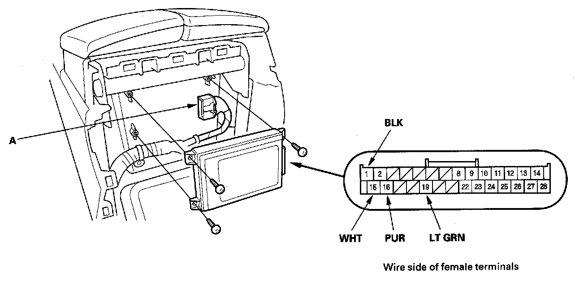
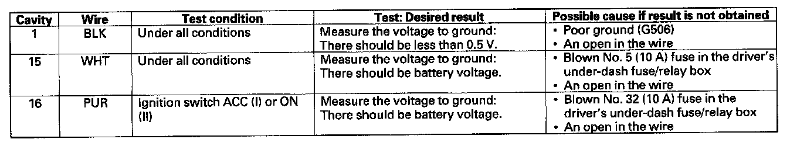
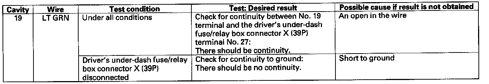

Cellular Phone: Service and Repair
Control Unit Input Test/Replacement1. Remove the console rear trim.

2. Disconnect the 28P connector (A) from the HandsFreeLink control unit (B).
3. Inspect the connector and socket terminals for a good pinfit to be sure they are all making good contact.
- If the terminals are bent, loose or corroded, repair them as necessary, and recheck the system.
- If the terminals look OK, go to step 4.

4. Reconnect the connector, and make these input tests at the connector.
- If any test indicates a problem, find and correct the cause, then recheck the system.
- If all the input tests prove OK, go to step 5.

5. Disconnect the 28P connector again, and make this input test at the connector.
- If the test indicates a problem, find and correct the cause, then recheck the system.
- If the input test proves OK, the HandsFreeLink control unit must be faulty, replace it.